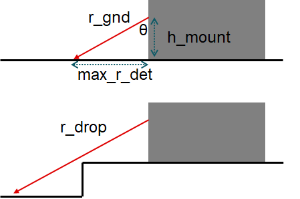
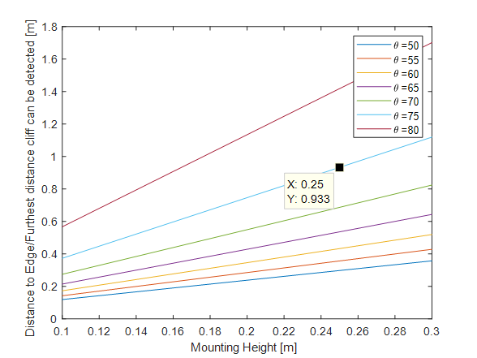
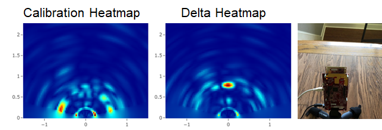

Introduction
The objective of this experiment is to demonstrate the ability to detect cliffs or small drop off transitions between surfaces using a TI mmWave Sensor EVM. Compared to other technologies typically used for cliff detection, mmWave sensors have the advantage of being robust to poor environmental conditions such as low light or high dust and dirt.
Setup
The setup for this experiment can be divided into two parts, namely physical setup and software setup. These are detailed below:
Physical Setup
The physical setup includes information about the scene such as the distance between the target and the sensor antenna, the type of target used, hardware setup and any other physical considerations e.g. non-reflective surfaces or use of anechoic chamber etc. The physical setup used for this experiment is given below:
Hardware:
- IWR6843 ISK ES2.0 Antenna Module
- MMWAVEICBOOST
Mounting:

In this experiment, the aim was to optimize the performance of the sensor for cliff detection capabilities rather than multi functional sensing modes such as object avoidance as well as cliff detection. The mounting height and angle of the sensor was chosen so that the boresight and highest gain region of the antenna radiation pattern was oriented towards the floor. Considering the geometrical illustration above, generally the closer the sensor is mounted to the floor, the shorter the max detection range possible unless the down tilt of the sensor is adjusted.

For this experiment the sensor was mounted 25cm from the floor with a down tilt of 15° or θ = 75° in the diagram above.
Software setup
1. The IWR6843ISK EVM was running the SDK xwr68xx out of box demo (version 3.4.0.3).
2. The chirp configuration (cliff_chirp.cfg) was used to configure the sensor for the following sensor parameters:
Short Range Chirp for ISK |
|
numTXAnt | 3 |
numRXAnt | 4 |
Max Range | 2.02 m |
Range Resolution | 3.9cm |
Max Velocity | 1.85m/s |
Velocity resolution | 0.12m/s |
3. A custom visualizer was used to record and parse the range-doppler and range-azimuth heatmaps generated using the OOB demo. The visualizer implemented the following algorithm for cliff detection based off range-doppler or range-azimuth analysis. Both methods are used to add robustness of cliff detection during moving and non moving states:
- Range-Doppler based detection: In the range-doppler heatmap based approach for cliff detection, there is a set of range bins that are assumed to correspond to the boresight reflection with the ground at the distance r_gnd +/-2 range bins. When the surface is flat, there is a peak at these range bins (shown in the top panel of the image below). When approaching a cliff drop off, the peak disappears from the range bins of interest and generally shifts to further ranges. The presence or absence of peaks in the heatmap at the range-bins of interest is used to indicate the presence/absence of a cliff.

- Range-Azimuth based detection: In the range-azimuth heatmap based approach for cliff detection, a calibration measurement is made when the device is on a surface without a cliff or object in the 1m range region in front of the sensor. After the calibration measurement is saved, for every frame a delta range-azimuth heatmap is calculated by subtracting the calibration heatmap from the current frame's heatmap. Hot regions in the delta heatmap are indicative of an obstruction or cliff within the region.

Testing and Results
- The sensor was mounted as indicated in the previous section on a manually sliding platform. Starting from 1.5m, the sensor was moved forward to approach the cliff.
- The distance at which the cliff was first be able to be detected was noted.
- This was repeated 10 times for the cliff/drop offs described in the table below.
Cliff Height | Material of floor | Material of drop off surface | Max range cliff detected at |
7 cm (garage transition) | Concrete | Concrete | 48cm |
10 cm (sunken living room) | Tile | Wood | 54 cm |
15 cm (roadside curb) | Concrete | Concrete | 57 cm |
19 cm (stairs) | Wood | Wood | 55 cm |
Conclusion
- The experiment demonstrates that mmWave sensor running the mmWave SDK out of box demo can be used to enable cliff detection.
- Limitation of the experiments include the assumption that the sensor starts on the flat surface before approaching a cliff to detect the transition to the lower surface. Additionally the floor and drop off surfaces are relatively flat without significant protrusions.